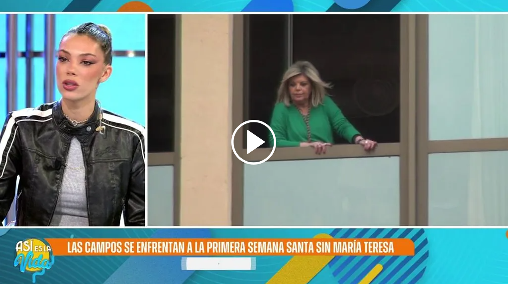

La Semana Santa más triste de Teleru Campos sin su madre "Apenas está saliendo"
Kate Middleton IA
·
Dani Alves libertad
·
Sofía Suescun dependencia
·
Rocco Costanzia detenido
·
Alerta tormenta solar
·
Más noticias
La Semana Santa más triste de Teleru Campos sin su madre "Apenas está saliendo"
Pedro García se derrumba por su "agotamiento mental y físico" tras salir nominado junto a Arantxa del Sol, ángel Cristo Jr. y Miri
Carmen Borrego abandona 'SV' tras la decisión del equipo médico: "No logra controlar el alto nivel de ansiedad"